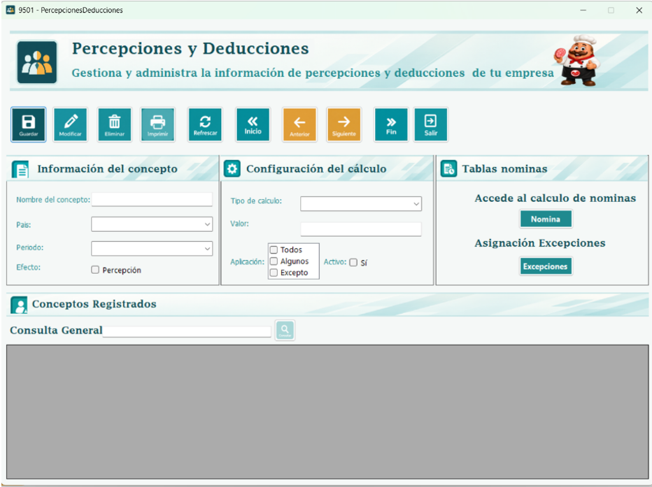
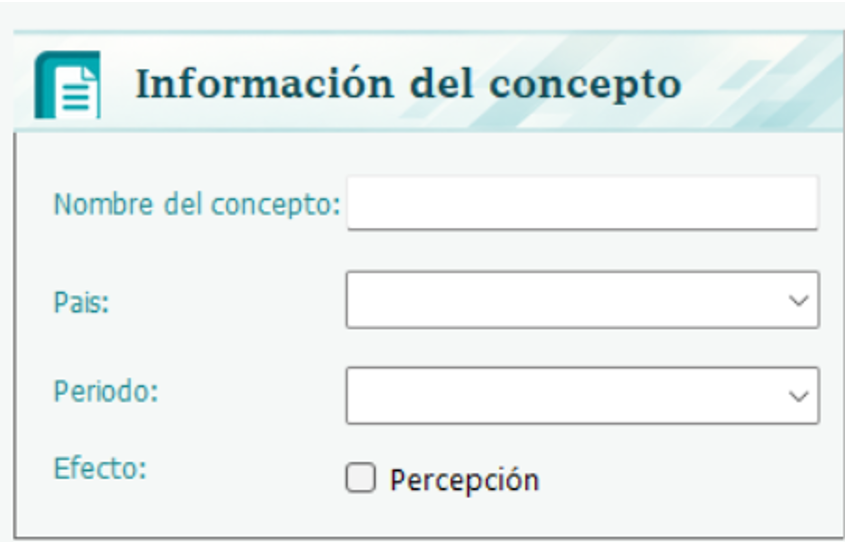
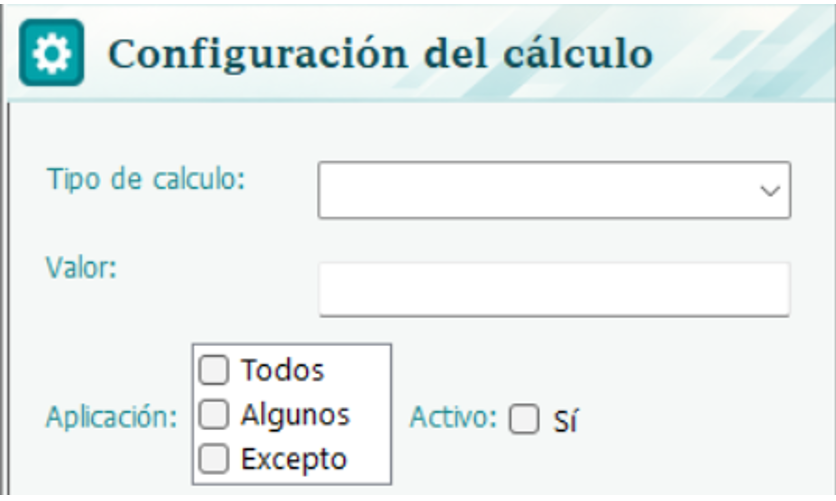

En este módulo se configuran los conceptos que suman o restan al pago de los empleados en la nómina. Una percepción es un ingreso adicional al salario, como una bonificación. Una deducción es un descuento, como el ISR o una pensión alimenticia. Cada concepto se crea una sola vez y la nómina lo aplica automáticamente cada vez que se calcula.

Para crear un concepto se llenan los siguientes datos. El nombre identifica el concepto y no puede repetirse. El periodo indica si el valor corresponde a cada mes o al año completo; en el segundo caso, la nómina reparte el resultado entre los meses, como ocurre con el ISR. El efecto define si el concepto suma al empleado (percepción) o le resta (deducción). El tipo determina cómo se calcula el valor, y el valor es el número que usa ese cálculo. Finalmente, la aplicación indica a quién le corresponde el concepto.

Existen tres tipos de cálculo. Con Monto, se usa una cantidad fija, por ejemplo una bonificación de Q250 o un descuento de Q500. Con %, se calcula un porcentaje sobre el salario; por ejemplo, un valor de 10 descuenta el 10% del sueldo. Con Tabla, el valor depende del salario y se define por rangos, como en el ISR, donde cada rango tiene su propio porcentaje. En este caso el campo de valor se oculta y aparece una grilla para capturar los rangos.
La aplicación puede ser Todos o Algunos. Con Todos, el concepto le llega a todos los empleados activos y no requiere más configuración. Con Algunos, solo lo reciben las personas asignadas; después de guardar, se eligen los empleados o departamentos que lo recibirán. Si se asigna un departamento, el concepto aplica a todas sus personas, incluidas las que ingresen después.

Por ejemplo, la Bonificación Incentivo se configura como una percepción de tipo Monto con valor 250 y aplicación Todos. El ISR es una deducción de tipo Tabla con aplicación Todos. La pensión alimenticia de una empleada es una deducción de tipo % con valor 10 y aplicación Algunos, asignada solo a ella. Un premio para el área contable es una percepción de tipo Monto con valor 300 y aplicación Algunos, asignada al departamento de Contabilidad.